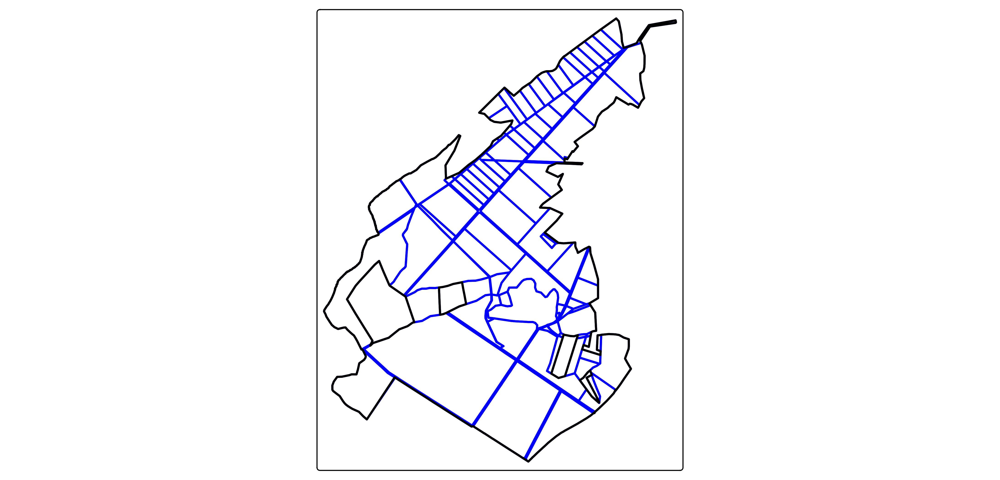
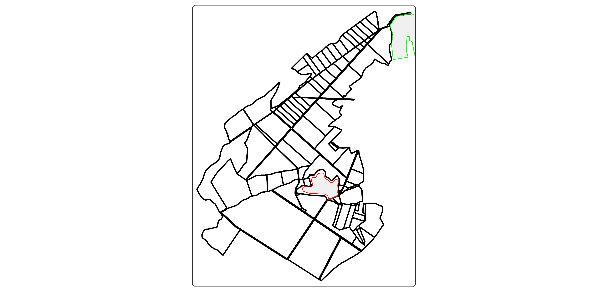

Téléchargement de données
vecteurs.RmdIntroduction
De quoi on parle ?
Rsequoia2 offre la possibilité de télécharger un
ensemble de données jugées pertinentes dans le cadre d’une gestion
forestière durable et multifonctionnelle.
Il peut s’agir aussi bien de couches vectorielles que de couches raster.
Les fonctions se déclinent en fonctions autonomes get_*
(où * correspont au thême de la couche) ou en fonctions
intégrées au processus formalisé de Sequoia
seq_*.
Procesus Sequoia
Si l’utilisateur opte (et nous vous le conseillons) pour le procesus
Sequoia, Rsequoia2 télécharge et stocke les
couches directement sur l’ordinateur.
Pour clarifier l’objet et la nature de ces données et afin d’en faciliter l’usage ultérieure, les couches téléchargées sont stockées selon leur thématiques:
CADASTRE: il s’agit des couches directement tirées des bases parcellaires (PCI Etalab ou BD Parcelaire).
ENVIRONNEMENT: y sont stockés les couches ayant trait aux zonages environnementaux tels que décrit par l’INPN.
IFN: il s’agit simplement des régions telles que décrites par l’IFN (ex: région forestières, sylvoécorégions, etc. )
PATRIMOINE: il s’agit des couches ayant trait aux zonages patrimoniaux (ex: monuments historiques)
SOL: cette rubrique regroupe les couches portant sur le sols (ex: carte géologique, carte pédologique, etc.).
URBANISME: les données tirées du géoportail de l’urbanisme y figurent (ex: prescriptions, SUP, etc.)
VECTORIEL: il s’agit des couches tirés de la BD TOPO servant notamment à l’habillage des cartes.
Zone d’étude utilisée
La forêt étudié dans l’article sera la forêt de Brin, propriété de l’école forestière de Nancy, située à Brin-Sur-Seille, dans le département de Meurthe-Et-Moselle (54).
idu <- c(
"540120000C0001", "540120000C0005", "540120000C0007", "540120000C0008",
"540120000C0009", "540120000C0010", "540120000C0011", "540120000C0012",
"540120000C0016", "540120000C0018", "540120000C0069", "540120000C0071",
"540120000C0073", "540120000C0077", "540700000C0002", "540700000C0003",
"540700000C0004", "540700000C0005", "540700000C0006", "540700000C0007",
"540700000C0008", "540700000C0009", "540700000C0010", "540700000C0011",
"540700000C0012", "540700000C0013", "540700000C0108", "540700000C0109",
"540700000C0110", "540700000C0111", "540700000C0112", "540700000C0113",
"540700000C0114", "540700000C0115", "540700000C0116", "540700000C0117",
"540700000C0118", "540700000C0119", "540700000C0120", "540700000C0121",
"54070000ZB0060", "540890000C0927", "540890000C0928", "540890000C1031",
"541000000A0001", "541000000A0002", "541000000A0003", "541000000A0004",
"541000000A0005", "541000000A0006", "541000000A0007", "541000000A0008",
"541000000A0009", "541000000A0010", "541000000A0011", "541000000A0012",
"541000000A0013", "541000000A0014", "541000000A0015", "541000000A0016",
"541000000A0018", "541000000A0019", "541000000A0029", "541000000A0030",
"541000000A0031", "541000000A0032", "541000000A0033", "541000000A0034",
"541000000A0035", "541000000A0036", "541000000A0037", "541000000A0038",
"541000000A0039", "541000000A0040", "541000000A0041", "541000000A0042",
"541000000A0043", "541000000A0044", "541000000A0045", "541000000A0046",
"541000000A0055", "541000000A0056", "541000000A0057", "541000000A0058",
"541000000A0059", "541000000A0060", "541000000A0061", "541000000A0062",
"541000000A0063", "541000000A0064", "541000000A0066", "541000000A0067",
"541000000A0076", "541000000A0080", "541000000A0081", "541000000A0083",
"541000000A0085", "541000000A0086", "541000000A0092", "541000000A0093",
"541000000A0094", "541000000A0095", "541000000A0098", "541000000A0099",
"541000000A0148", "541000000A0149", "541000000A0150", "541000000A0151",
"541000000A0152", "541000000A0153", "541000000A0156", "541000000A0157",
"54100000ZH0004", "54100000ZI0011"
)
parca <- get_parca(idu) |> transform(IDENTIFIANT = "BRIN")
tm_shape(parca)+
tm_borders(col = "blue", lwd = 2)
2. ENVIRONNEMENT
La fonction get_mnhn() permet de télécharger un zonnage
environnemtal en s’articulant autour de trois arguments : -
x correspond au sf de la zone d’étude; -
key corespond à la clé (= type) du zonage recherché (ex:
"zps"); - buffer correspond au tempon éxécuté
autour de la zone d’étude pour capter un résultat.
znieff1 <- get_mnhn(x = parca, key = "znieff1", buffer = 500)
znieff2 <- get_mnhn(x = parca, key = "znieff2", buffer = 500)
tm_shape(parca) +
tm_borders(col = "black", lwd = 2) +
tm_shape(znieff2) +
tm_polygons(col = "green", fill_alpha = 0.4) +
tm_shape(znieff1) +
tm_polygons(col = "red", fill_alpha = 0.4)
La fonction seq_mnhm() permet de télécharger l’ensemble des
couches.